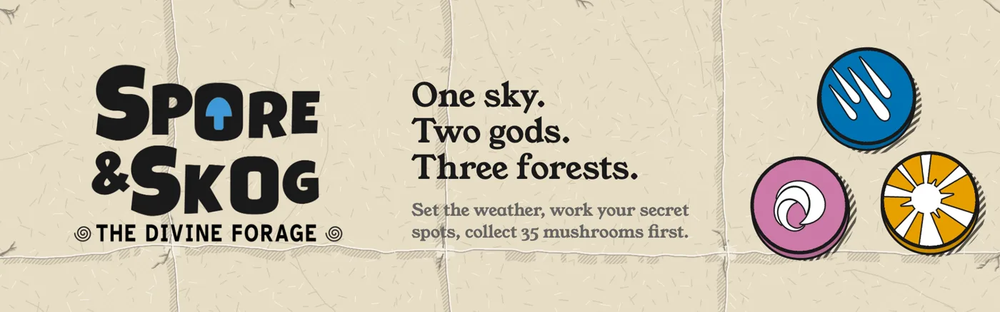
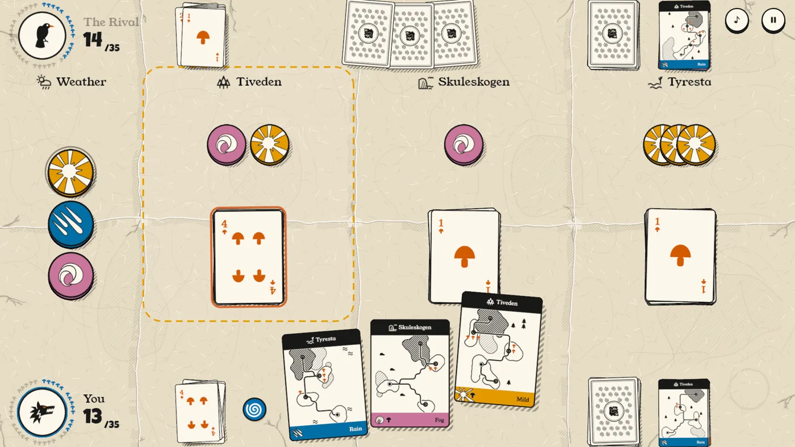
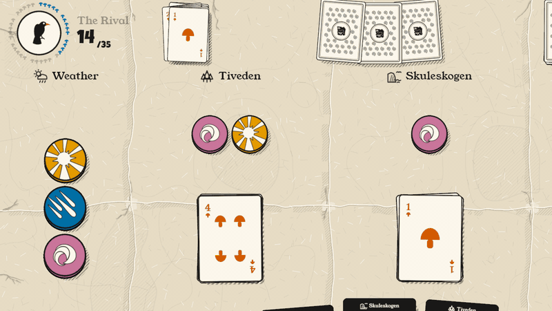
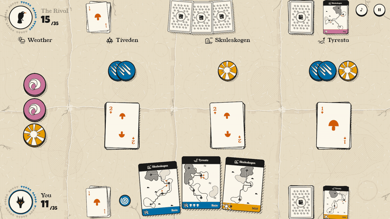
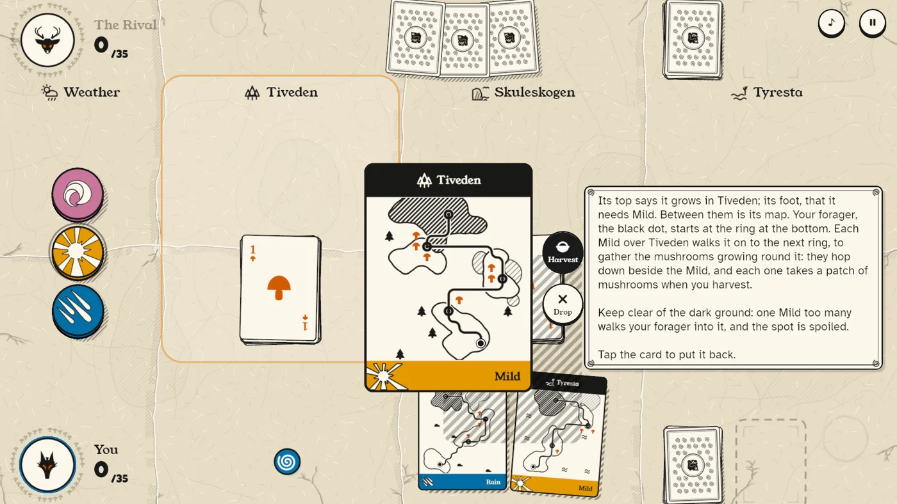
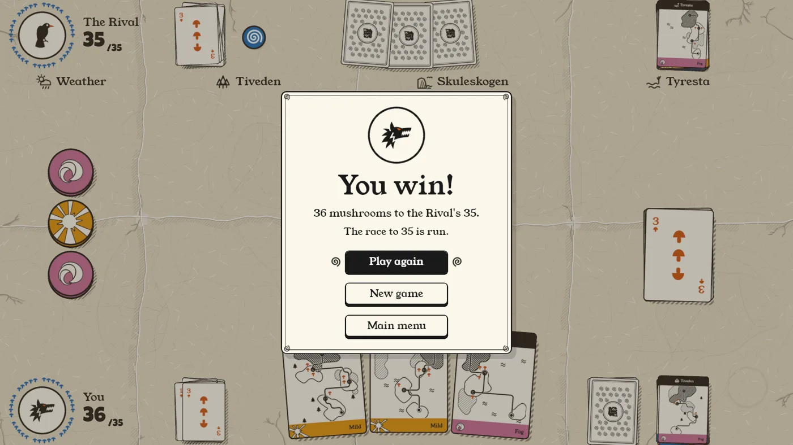

The forest is quiet until you step in. Headphones help: the creatures are soft, and placed left and right.
The sliders are what the game sends when the weather over the forests changes. The bars are each creature's odds of calling next under that sky. In the game the creatures sit well under the music; alone here, they're brought up 12 dB.
Made as they call
Most game sounds are clips: a buffer made once (recorded, or rendered at start-up) and played back when it's needed. A forest doesn't work that way. A cuckoo that calls exactly the same three times in a row stops being a cuckoo and starts being a sound effect.
So the creatures in Spore & Skog aren't clips. Every call starts from a handful of dice (its pitch, how many notes, how fast, how far away, left or right) and is then made a sample at a time, on the audio thread, while you hear it. No two are the same, and there is nothing to store: the whole forest is 8 recipes and a little arithmetic per sample.
Live synthesis has a cost the clips don't: it runs against the audio deadline. So the forest is kept small. At most 3 creatures call at once, each is a few oscillators and filters, and they sit well under everything else in the mix.
Each press makes a new call of that creature. Here it is rendered first, so the picture above is exactly what you hear; in the game the same code runs live, inside the callback.
One stream, one callback
CPAL is Rust's cross-platform audio output: CoreAudio, WASAPI, ALSA, Web Audio. It does one thing. It opens a stream and keeps calling your closure with an empty buffer to fill, a few milliseconds' worth at a time, on a real-time thread. Miss the deadline and you hear a click.
The game opens exactly one stream and puts a small mixer, the desk, in its callback. The rest of the game never touches the desk's state; it sends it commands over a channel, and the desk reads them at the start of each buffer. Last in its chain is a soft limiter, so a pile-up of calls never clips:
/// What the game asks of the desk.
pub enum Command {
/// The creatures about: the weather (rain, fog, mild, 0 to 1 each), how
/// often one calls (mean seconds, 0 for none), and how loud.
Wildlife {
levels: [f32; 3],
every: f32,
gain: f32,
},
/// One creature, now (the game uses this only in its tests; the devlog
/// and the examples use it to call one up).
Call(Kind),
/// The bus's gain, 0 to 1 (the game's effects volume).
Level(f32),
}impl Desk {
pub fn new(rate: u32, commands: Receiver<Command>) -> Self {
let rate = rate as f32;
Self {
commands,
wildlife: Wildlife::new(rate),
// Silent at first, fading in: no click as the stream opens.
level: 0.0,
level_to: 1.0,
k: 1.0 - (-GLIDE / rate).exp(),
}
}
fn take_commands(&mut self) {
while let Ok(command) = self.commands.try_recv() {
match command {
Command::Wildlife {
levels,
every,
gain,
} => self.wildlife.set(levels, every, gain),
Command::Call(kind) => self.wildlife.call(kind),
Command::Level(to) => self.level_to = to,
}
}
}
/// Fill `out`, interleaved with `channels` to a frame: what CPAL's data
/// callback calls.
pub fn render(&mut self, out: &mut [f32], channels: usize) {
self.take_commands();
for frame in out.chunks_mut(channels.max(1)) {
let [l, r] = self.next_frame();
match frame {
[mono] => *mono = 0.5 * (l + r),
[a, b, rest @ ..] => {
*a = l;
*b = r;
rest.fill(0.0);
}
[] => {}
}
}
}
fn next_frame(&mut self) -> [f32; 2] {
self.level += (self.level_to - self.level) * self.k;
let life = self.wildlife.next_frame();
life.map(|x| limit(x * self.level))
}
}Opening the stream is the usual CPAL dance (host, device, config), with one generic function so
the same desk can feed a device that wants f32, i16, u16 or
i32:
fn build<T: SizedSample + FromSample<f32>>(
device: &Device,
config: StreamConfig,
mut desk: Desk,
) -> Result<Stream, String> {
let channels = config.channels as usize;
let mut scratch = Vec::<f32>::new();
device
.build_output_stream(
config,
move |data: &mut [T], _| {
scratch.resize(data.len(), 0.0);
desk.render(&mut scratch, channels);
for (d, s) in data.iter_mut().zip(&scratch) {
*d = T::from_sample(*s);
}
},
|e| eprintln!("audio: {e}"),
None,
)
.map_err(|e| e.to_string())
}And with that, a forest is a few lines away. This program has no game around it at all:
//! The forest, through CPAL, with no game around it: one stream, the desk in
//! its callback, and this thread telling it what weather it is.
//!
//! cargo run -p forest-cpal --release # a minute of each weather
//! cargo run -p forest-cpal --release -- fog # just the fog
//! cargo run -p forest-cpal --release -- Owl # one creature
use std::{sync::mpsc, thread, time::Duration};
use forest::{desk::Command, wildlife::Kind};
fn main() -> Result<(), String> {
let (desk, commands) = mpsc::channel();
// The stream plays for as long as it lives.
let _stream = forest::device::open(commands)?;
let weathers = [
("clear", [0.0, 0.0, 0.0]),
("rain", [1.0, 0.0, 0.0]),
("fog", [0.0, 1.0, 0.0]),
("mild", [0.0, 0.0, 1.0]),
];
let arg = std::env::args().nth(1);
if let Some(kind) = Kind::ALL.iter().find(|k| arg.as_deref() == Some(&format!("{k:?}"))) {
println!("{kind:?}");
desk.send(Command::Call(*kind)).ok();
thread::sleep(Duration::from_secs(5));
return Ok(());
}
for (name, levels) in weathers {
if arg.as_ref().is_some_and(|a| a != name) {
continue;
}
println!("{name}: a creature every 2.5 s or so");
desk.send(Command::Wildlife { levels, every: 2.5, gain: 1.0 }).ok();
thread::sleep(Duration::from_secs(if arg.is_some() { 60 } else { 20 }));
}
Ok(())
}Three small tools
Every creature is made from the same three things. First, noise: a xorshift generator, seeded, so the forest is the same every time the game starts, and with helpers for the dice.
/// White noise (xorshift).
pub struct Noise(pub u32);
impl Noise {
pub fn next(&mut self) -> f32 {
let mut x = self.0;
x ^= x << 13;
x ^= x >> 17;
x ^= x << 5;
self.0 = x;
(x >> 8) as f32 / (1 << 23) as f32 - 1.0
}
/// 0 to 1.
pub fn unit(&mut self) -> f32 {
0.5 + 0.5 * self.next()
}
pub fn between(&mut self, a: f32, b: f32) -> f32 {
a + (b - a) * self.unit()
}
}Second, a filter. Birds are mostly pure tones, but a woodpecker's knock, a bee's body, a frog's throat and a raven's croak are all something buzzing through a resonance. The tool for that is a state-variable filter, here in its "topology-preserving" form: stable when its frequency sweeps, cheap, and with a low-pass and a band-pass out of the same two lines of state. Its coefficients are Andrew Simper's (Cytomic, 2013), from the method Vadim Zavalishin sets out in The Art of VA Filter Design.
/// A state-variable filter (topology-preserving): low and band outputs.
#[derive(Default, Clone, Copy)]
pub struct Svf {
a: f32,
b: f32,
}
impl Svf {
/// One step at `hz` with resonance `q`; returns (low, band).
pub fn next(&mut self, x: f32, hz: f32, q: f32, rate: f32) -> (f32, f32) {
let g = (PI * hz.min(rate * 0.45) / rate).tan();
let k = 1.0 / q;
let a1 = 1.0 / (1.0 + g * (g + k));
let a2 = g * a1;
let a3 = g * a2;
let v3 = x - self.b;
let v1 = a1 * self.a + a2 * v3;
let v2 = self.b + a2 * self.a + a3 * v3;
self.a = 2.0 * v1 - self.a;
self.b = 2.0 * v2 - self.b;
(v2, v1)
}
}Try it: noise through the filter
Third, a shape in time. Real calls don't switch on and off; they swell and fade. One smooth bump, a smoothstep up and down, shapes nearly every note in the forest:
/// A smooth bump over `0..len`, rising and falling over `edge`.
pub fn window(t: f32, len: f32, edge: f32) -> f32 {
if t < 0.0 || t > len {
return 0.0;
}
let e = edge.min(len / 2.0).max(1e-4);
let up = (t / e).min(1.0);
let down = ((len - t) / e).min(1.0);
let w = up.min(down);
w * w * (3.0 - 2.0 * w)
}If you know synthesizers, this is an attack–hold–release envelope with its corners rounded: it rises over edge,
holds at full, and falls over edge, all within a length fixed when the call begins.
Unlike an ADSR there is no separate decay to a sustain level, and nothing waits for a key to be
let go: a creature's call is a gesture of known length, not a note someone holds. In signal
processing terms it is a tapered window, of the same family as a
Tukey window.
Each creature is then two pieces of one Call: the dice, rolled once in
Call::new, and the sound, made a sample at a time in Call::next.
Whistles: songbird, cuckoo, owl
The three that sing share one engine: a list of notes, each a sweep from one pitch to another, played by a single sine. What makes them different is the notes they roll. A songbird throws a quick phrase of short sweeps around one high pitch:
Kind::Song => {
// A phrase of quick sweeps around one pitch.
let base = noise.between(2600.0, 4200.0);
let mut at = 0.0;
for _ in 0..2 + (noise.unit() * 5.0) as usize {
let up = noise.unit() < 0.5;
let len = noise.between(0.05, 0.12);
let span = noise.between(400.0, 1300.0);
let (from, to) = if up { (base, base + span) } else { (base + span, base) };
call.notes.push((at, len, from, to));
at += len + noise.between(0.03, 0.09);
}
call.len = at;
call.gain *= 0.7;
}The cuckoo calls its falling third, two to four times, and always from a little way off:
Kind::Cuckoo => {
// "Cu-ckoo", two to four times: a falling third.
let f = noise.between(600.0, 700.0);
let times = 2 + (noise.unit() * 3.0) as usize;
for i in 0..times {
let at = i as f32 * 0.78;
call.notes.push((at, 0.2, f * 1.01, f));
call.notes.push((at + 0.3, 0.32, f * 0.8, f * 0.78));
}
call.len = times as f32 * 0.78;
call.dull = call.dull.max(0.35);
}And the tawny owl, the fog's creature, calls its "hoooo …… hu, hu-hu-hoooo":
Kind::Owl => {
// The tawny owl: "hoooo …… hu, hu-hu-hoooo", far off in the fog.
let f = noise.between(380.0, 440.0);
call.notes = vec![
(0.0, 0.75, f * 0.97, f),
(1.35, 0.16, f * 0.98, f * 0.96),
(1.62, 1.15, f, f * 0.97),
];
call.len = 2.8;
call.dull = call.dull.max(0.45);
}Then all three play through the same arm, each with its own timbre. The songbird is a bare sine in an arch. The cuckoo adds a touch of its octave. The owl breathes, with noise through the filter tuned to its octave, and its last note quavers as it starts:
Kind::Song | Kind::Cuckoo | Kind::Owl => {
let Some(&(start, len, from, to)) =
self.notes.iter().find(|n| t >= n.0 && t < n.0 + n.1)
else {
return Some([0.0; 2]);
};
let u = (t - start) / len;
let hz = from + (to - from) * u;
self.phase = (self.phase + hz * dt).fract();
let p = self.phase * TAU;
match self.kind {
Kind::Song => p.sin() * (u * PI).sin(),
Kind::Cuckoo => (p.sin() + 0.18 * (2.0 * p).sin()) * window(u, 1.0, 0.18),
_ => {
// The owl's last note quavers at its start.
let quaver = if start > 1.5 {
1.0 - 0.6 * (1.0 - u).powi(3) * (0.5 + 0.5 * (t * 2.0 * TAU * 6.0).sin())
} else {
1.0
};
let breath = self.air.next(noise.next(), hz * 2.0, 2.0, rate).1 * 0.25;
(p.sin() + breath) * window(u, 1.0, 0.3) * quaver
}
}
}Knocks and buzzes: woodpecker, bumblebee, crickets
A woodpecker's roll is a train of knocks, each a burst of filtered noise with a ring of the dead wood's pitch, coming slightly faster as it goes and dying away:
Kind::Woodpecker => {
// A drum roll on dead wood: quick knocks, quickening, dying away.
call.count = noise.between(12.0, 22.0).floor();
call.rate = noise.between(15.0, 22.0);
call.pitch = noise.between(600.0, 900.0);
call.len = call.count / call.rate + 0.05;
}Kind::Woodpecker => {
// Knocks come a little faster as the roll goes on.
let pos = t * self.rate * (1.0 + 0.15 * t);
let i = pos.floor();
if i >= self.count {
0.0
} else {
let local = (pos - i) / (self.rate * (1.0 + 0.15 * t));
let fade = 1.0 - 0.65 * i / self.count;
let knock = (-local / 0.005).exp();
let wood = self.filter.next(noise.next(), 1600.0, 3.0, rate).1 * 2.0;
let ring = (TAU * self.pitch * local).sin() * 0.6;
(wood + ring) * knock * fade
}
}The bumblebee is the one creature that moves: it crosses from one side to the other, and its buzz (a sawtooth through the filter's low-pass) falls a little in pitch as it passes (the Doppler effect), the way a passing car's does.
Kind::Bee => {
// A bumblebee crossing, its buzz falling as it passes.
call.pitch = noise.between(140.0, 190.0);
call.len = noise.between(2.2, 3.4);
let side = if noise.unit() < 0.5 { -1.0 } else { 1.0 };
call.pan = -0.85 * side;
call.pan_to = 0.85 * side;
call.dull = 0.0;
call.gain *= 0.55;
}Kind::Bee => {
let u = t / self.len;
let hz = self.pitch * (1.08 - 0.16 * u) * (1.0 + 0.03 * (t * TAU * 5.0).sin());
self.phase = (self.phase + hz * dt).fract();
let saw = 2.0 * self.phase - 1.0;
let body = self.filter.next(saw, 700.0, 1.2, rate).0;
body * (u * PI).sin().powf(1.5)
}Crickets are a high tone gated into chirps of three quick pulses, a few times a second:
Kind::Crickets => {
let chirp = (t * self.rate).fract() / self.rate;
let pulse = (chirp / 0.04) as usize;
let on = pulse < 3 && (chirp % 0.04) < 0.025;
self.phase = (self.phase + self.pitch * dt).fract();
let gate = if on { window(chirp % 0.04, 0.025, 0.005) } else { 0.0 };
(self.phase * TAU).sin() * gate * window(t, self.len, 0.5)
}Throats: frog and raven
These two are made the way voices are: a source and a filter. A frog's croak is a train of clicks (glottal pulses, 26 to 38 a second) each ringing a narrow resonance for the throat and a broader one an octave down for the chest. Nothing in it is a tone; the pitch you hear is the resonance.
Kind::Frog => {
let croak = (t / 0.62).floor();
let local = t - croak * 0.62;
let on = croak < self.count && local < 0.34;
// A train of glottal pulses ringing a throat.
let pulse = (local * self.rate) as i32;
let kick = if on && pulse != self.last_pulse {
self.last_pulse = pulse;
1.0
} else {
0.0
};
if !on {
self.last_pulse = -1;
}
let throat = self.filter.next(kick, self.pitch, 9.0, rate).1;
let chest = self.filter2.next(kick, self.pitch * 0.5, 5.0, rate).1;
(throat + chest * 0.6) * window(local, 0.34, 0.04)
}The raven took the longest. Shaping a voice like the frog's, with pulses, jitter and the pitch slipping to half itself, kept sounding like a duck, or a kazoo. What finally worked is a synthesizer patch, from a reply on r/synthrecipes, checked against a recording of real ravens: a low sawtooth (about 110 Hz) thrown up a fifth in 15 ms and falling back over 150 ms, chopped by a fast, nearly square tremolo, 55 times a second, the way a raven's throat flutters, its rate wavering so it never ticks like a machine. Then a strong "ah" formant at 1 kHz, a nasal edge just above it, and a lift at 2.5 to 4 kHz:
Kind::Raven => {
let croak = (t / RAVEN_GAP).floor();
let local = t - croak * RAVEN_GAP;
if croak >= self.count || local > RAVEN_CROAK {
0.0
} else {
// The pitch thrown up a fifth in 15 ms, then falling back
// over the next 150 ms; nothing held.
let throw = if local < 0.015 {
local / 0.015
} else {
(-(local - 0.015) / 0.15).exp()
};
let hz = self.pitch * 2f32.powf(7.0 * throw / 12.0);
self.phase = (self.phase + hz * dt).fract();
let saw = 2.0 * self.phase - 1.0;
// The throat: a fast tremolo, 55 times a second and nearly
// square, its rate wavering a little so it never ticks.
let waver =
(self.waver.next(noise.next(), 6.0, 0.7, rate).0 * 40.0).clamp(-1.0, 1.0);
self.tremolo = (self.tremolo + 55.0 * (1.0 + 0.15 * waver) * dt).fract();
let square = (2.5 * (self.tremolo * TAU).sin()).tanh() / 2.5f32.tanh();
let src = saw * (1.0 - 0.8 * (0.5 - 0.5 * square));
// "Ah" at 1 kHz, a nasal edge at 1.5 kHz, and a lift at
// 2.5 to 4 kHz.
let ah = self.filter.next(src, 1000.0, 3.5, rate).1
- self.filter2.next(src, 1550.0, 4.0, rate).1 * 0.45
+ self.bright.next(src, 3200.0, 1.6, rate).1 * 0.55
+ src * 0.08;
ah * window(local, RAVEN_CROAK, 0.012) * (1.0 - 0.5 * local / RAVEN_CROAK)
}
}Near and far
Every call, whatever made it, ends the same way. Each one rolled a distance (dull)
when it began: far creatures are low-passed, because air and leaves take the highs first, and
quieter. Then an equal-power pan puts it left or right, moving if it's the bee:
// Far creatures are duller (a low-pass), and quieter.
let near = 1.0 - self.dull;
let x = if self.dull > 0.01 {
self.distance.next(x, 9000.0 - 7000.0 * self.dull, 0.7, rate).0
} else {
x
};
let g = self.gain * (0.35 + 0.65 * near);
let pan = self.pan + (self.pan_to - self.pan) * (t / self.len);
let angle = (pan.clamp(-1.0, 1.0) + 1.0) * std::f32::consts::FRAC_PI_4;
Some([x * g * angle.cos(), x * g * angle.sin()])Who calls, and when
A forest in the rain shouldn't sound like a forest in the sun. Each creature has a habitat: how much it likes rain, fog, mild weather and a clear sky. Frogs love rain, the owl only comes out in fog, bees and crickets want it mild.
impl Kind {
pub const ALL: [Kind; 8] = [
Kind::Song,
Kind::Cuckoo,
Kind::Woodpecker,
Kind::Bee,
Kind::Crickets,
Kind::Frog,
Kind::Owl,
Kind::Raven,
];
pub fn habitat(self) -> [f32; 4] {
match self {
Kind::Song => [0.1, 0.0, 1.0, 0.8],
Kind::Cuckoo => [0.0, 0.1, 0.6, 0.5],
Kind::Woodpecker => [0.1, 0.4, 0.4, 0.6],
Kind::Bee => [0.0, 0.0, 0.6, 0.2],
Kind::Crickets => [0.0, 0.0, 0.6, 0.1],
Kind::Frog => [1.0, 0.3, 0.0, 0.1],
Kind::Owl => [0.1, 1.0, 0.0, 0.0],
Kind::Raven => [0.4, 0.6, 0.1, 0.3],
}
}
}To choose who calls next, the forest weighs each creature by how well it suits the weather about, with one more rule: whoever just called is four times less likely to call again, so you rarely hear the same creature twice running. (The bars at the top of the page are these weights.)
/// Which creature calls next: weighted by how well the weather suits it,
/// and seldom the same one twice running.
pub fn choose(&mut self) -> Kind {
let [rain, fog, mild] = self.levels;
let clear = (1.0 - rain.max(fog).max(mild)).max(0.0);
let suits = [rain, fog, mild, clear];
let weights = Kind::ALL.map(|k| {
let w: f32 = k.habitat().iter().zip(suits).map(|(h, s)| h * s).sum();
if Some(k) == self.last { w * 0.25 } else { w }
});
let total: f32 = weights.iter().sum();
let mut pick = self.noise.unit() * total;
for (k, w) in Kind::ALL.into_iter().zip(weights) {
if pick < w {
return k;
}
pick -= w;
}
Kind::Song
}And when: every frame, a countdown. When it runs out, the next call comes, and the next wait is drawn between a third and nearly twice the mean, so calls neither queue up nor stall.
pub fn next_frame(&mut self) -> [f32; 2] {
if self.every > 0.0 {
self.wait -= 1.0 / self.rate;
if self.wait <= 0.0 {
// Gaps of a third to twice the mean, so calls neither queue nor stall.
self.wait = self.every * self.noise.between(0.35, 1.65);
let kind = self.choose();
self.call(kind);
}
}
if self.calls.is_empty() {
return [0.0; 2];
}
let mut out = [0.0; 2];
let (noise, rate) = (&mut self.noise, self.rate);
self.calls.retain_mut(|c| match c.next(noise, rate) {
Some([l, r]) => {
out[0] += l;
out[1] += r;
true
}
None => false,
});
out
}One honest note on the real-time rules: Call::new builds a small list of notes, an
allocation on the audio thread. It happens a few times a minute, for a few bytes, and I've let it
be. Everything per sample allocates nothing.
Into Bevy
Spore & Skog is a Bevy game, but its sound doesn't
use bevy_audio. The audio lives entirely outside the ECS: one CPAL stream, one desk in
its callback. Bevy's side is small, and it has three parts.
1. The stream is a non-send resource
A cpal::Stream plays for as long as it lives, and it isn't Send. So it's
opened once, in an exclusive start-up system, and kept in the world as a non-send resource. Next
to it goes a plain Sound resource holding the channel's sender: that is the only way
the rest of the game reaches the audio.
impl Plugin for SoundPlugin {
fn build(&self, app: &mut App) {
app.init_resource::<Sound>()
.add_systems(Startup, open)
.add_systems(Update, suspend);
}
}/// Open the stream at start-up. An exclusive system: the stream isn't
/// `Send`, so it goes in as a non-send resource.
fn open(world: &mut World) {
let (tx, rx) = mpsc::channel();
match forest::device::open(rx) {
Ok(stream) => world.insert_non_send(Stream(stream)),
Err(e) => {
warn!("no sound: {e}");
return;
}
}
world.insert_resource(Sound { desk: Some(tx) });
}The Sound resource is a thin set of methods that each send one command. If there's no
audio device (or the game runs muted) the sender is None, and every method quietly
does nothing, so no system ever has to ask.
/// The creatures about: they suit the weather (rain, fog, mild, 0 to 1
/// each); one calls every `every` seconds or so (0: none), at `gain`.
pub fn wildlife(&self, levels: [f32; 3], every: f32, gain: f32) {
self.send(Command::Wildlife {
levels,
every,
gain,
});
}
fn send(&self, command: Command) {
if let Some(desk) = &self.desk {
let _ = desk.send(command);
}
}2. One system decides what the forest sounds like
The interesting part is on the game's side: working out what the forest should be. In
Spore & Skog three forests lie on the table, each with weather cards laid over it.
This system runs every frame at the table. It takes the weather over all three, or over just one
when you lean in to look at that forest's card, in which case the creatures come closer and call
more often. It hushes them behind a menu and once the game is over. It sends a command only when
something actually changed, remembered in a Local, so the channel carries a handful
of messages a game, not sixty a second.
/// At the table, a creature calls every this many seconds or so, this loud: the
/// forest is about, not in the way.
const TABLE_CALLS: f32 = 9.0;
const TABLE_GAIN: f32 = 0.7;
/// Looking at a forest card, its creatures call this often, this loud.
const LOOK_CALLS: f32 = 3.0;
const LOOK_GAIN: f32 = 0.9;
/// The forest heard at the table: its creatures suit the weather set over the
/// three forests (as the land shows it), and hush behind a menu and once the
/// game is over. Looking at one forest's card, they are that forest's, and
/// closer.
fn forest(
app: Res<State<AppState>>,
overlay: Res<State<Overlay>>,
game: Option<Res<Match>>,
shown: Option<Res<Shown>>,
peek: Res<Peek>,
mut told: Local<Option<([f32; 3], bool, bool)>>,
sound: Res<Sound>,
) {
let (Some(game), Some(shown)) = (game, shown) else {
return;
};
let looking = match peek.look {
Some(Look::Forest(f)) => shown.state.forests.get(f),
_ => None,
};
let mut levels = [0.0; 3];
if let Some(forest) = looking {
levels = crate::table::land::amounts(forest);
} else {
for forest in &shown.state.forests {
for (l, a) in levels.iter_mut().zip(crate::table::land::amounts(forest)) {
*l += a / 3.0;
}
}
}
let on = !game.demo && !shown.state.over && *overlay.get() == Overlay::None;
let close = looking.is_some();
// Back at the table, tell it afresh: leaving hushed it.
let same = !app.is_changed()
&& told.is_some_and(|(was, was_on, was_close)| {
was_on == on
&& was_close == close
&& was.iter().zip(levels).all(|(a, b)| (a - b).abs() < 0.01)
});
if !same {
*told = Some((levels, on, close));
let (every, gain) = if close {
(LOOK_CALLS, LOOK_GAIN)
} else {
(TABLE_CALLS, TABLE_GAIN)
};
sound.wildlife(levels, if on { every } else { 0.0 }, gain);
}
}Leaving the table, a system on OnExit sends one last command, and the forest falls
quiet. The title screen has its own forest, busier and softer, following the weather that drifts
across the logo:
/// On the title, a creature calls every this many seconds or so, this loud,
/// and the weather is heard at this much of its strength: a bed under the menu.
const TITLE_CALLS: f32 = 4.5;
const TITLE_CALL_GAIN: f32 = 0.6;
/// Leaving the title, its weather falls quiet.
fn hush(sound: Res<Sound>) {
sound.ambience([0.0; 3]);
sound.wildlife([0.0; 3], 0.0, 1.0);
}3. The app's lifecycle
On an iPad, the game can be sent to the home screen at any moment. The stream should stop then,
and the synthesis with it. Bevy reports this as AppLifecycle messages:
/// In the background (the iPad's home screen) the stream stops, and the
/// synthesis with it; it starts again when the game comes back.
fn suspend(
mut lifecycle: MessageReader<bevy::window::AppLifecycle>,
stream: Option<NonSend<Stream>>,
) {
use bevy::window::AppLifecycle;
use cpal::traits::StreamTrait;
let Some(stream) = stream else {
lifecycle.clear();
return;
};
for event in lifecycle.read() {
let result = match event {
AppLifecycle::WillSuspend | AppLifecycle::Suspended => stream.0.pause(),
AppLifecycle::WillResume | AppLifecycle::Running => stream.0.play(),
AppLifecycle::Idle => Ok(()),
};
if let Err(e) = result {
warn!("sound stream: {e}");
}
}
}That's the whole integration. It's in this repository as a small runnable Bevy app with the
game's own numbers, where the keyboard stands in for the table:
cargo run -p bevy-forest --release. Keys 1, 2, 3 and 0 set the weather, Space leans
in, M opens a "menu".
/// The forest heard: its creatures suit the weather, come closer when you
/// look, and hush behind a menu. Runs every frame, tells the desk only when
/// something changed (the `Local` remembers what it last said).
fn forest(sky: Res<Sky>, mut told: Local<Option<([f32; 3], bool, bool)>>, sound: Res<Sound>) {
let on = !sky.menu;
let now = (sky.levels, on, sky.close);
if *told == Some(now) {
return;
}
*told = Some(now);
let (every, gain) = if sky.close {
(LOOK_CALLS, LOOK_GAIN)
} else {
(TABLE_CALLS, TABLE_GAIN)
};
sound.wildlife(sky.levels, if on { every } else { 0.0 }, gain);
}Testing a forest
You can't test that a cuckoo sounds like a cuckoo. You can test that the forest obeys the weather, that every creature is heard and then stops, and that calls come about as often as asked:
#[test]
pub fn the_weather_picks_the_creatures() {
let count = |levels: [f32; 3], kind: Kind| {
let mut w = Wildlife::new(RATE);
w.set(levels, 1.0, 1.0);
(0..400).filter(|_| w.choose() == kind).count()
};
assert_eq!(count([0.0, 0.0, 1.0], Kind::Owl), 0, "no owls on a sunny day");
assert_eq!(count([0.0, 0.0, 1.0], Kind::Frog), 0, "nor frogs");
assert!(count([0.0, 1.0, 0.0], Kind::Owl) > 80, "owls in the fog");
assert!(count([1.0, 0.0, 0.0], Kind::Frog) > 120, "frogs in the rain");
assert!(count([0.0, 0.0, 0.0], Kind::Song) > 60, "birds under a clear sky");
}#[test]
pub fn calls_come_about_as_often_as_asked() {
let mut w = Wildlife::new(RATE);
w.set([0.0, 0.0, 1.0], 2.0, 1.0);
for _ in 0..(RATE as usize * 60) {
w.next_frame();
}
let heard = w.called;
assert!((15..=45).contains(&heard), "about 30 calls a minute (heard {heard})");
}To actually listen, one more test writes every creature, and forty seconds of each weather's
forest, to WAV files: FOREST_WAV=/tmp/forest cargo test -p forest.
Words used here
- Sample, sample rate
- A sound in a computer is a list of numbers, each the air pressure at one instant: a sample. The forest is made at the output device's rate (often 48,000 samples a second); a frame is one sample for each channel, left and right.
- Audio callback
- The function the audio driver calls, again and again, to fill the next few milliseconds of samples. It runs on a real-time thread with a deadline: it must not wait on a lock, read a file or allocate much. See Ross Bencina's Real-time audio programming 101.
- Oscillator, phase
- A repeating wave, kept as a phase that climbs from 0 to 1 once per cycle (adding frequency ÷ sample rate each sample) and wraps.
sin(2π·phase)is a sine;2·phase − 1a sawtooth. - Sine, sawtooth, harmonics
- A sine has one frequency. A sawtooth has every whole multiple of it (the harmonics), each weaker than the last: bright and buzzy, the raw material a filter carves into a voice. Too many high harmonics alias.
- Aliasing
- A frequency above half the sample rate can't be stored; it folds back as a different, wrong one. One reason the forest builds bright sounds from filters and noise rather than piling up harmonics.
- White noise
- Random samples: every frequency at once, like a hiss. Filtered, it becomes breath, rasp, wind, the knock of wood.
- Filter, resonance, Q
- A filter lets some frequencies through and holds others back. A low-pass keeps the lows (a far sound, through leaves); a band-pass keeps a band around one frequency, and a sharp one resonates: kicked, it rings. Q is how sharp: centre frequency over bandwidth. High Q, a narrow band and a long ring. Julius O. Smith's book is the free, thorough way in.
- State-variable filter (SVF)
- A filter built from two integrators in a loop, which gives low-pass, band-pass and high-pass outputs at once, and can sweep its frequency every sample without blowing up. The forest's is the "topology-preserving transform" form: Andrew Simper's paper has the exact coefficients
Svf::nextuses. - Formant
- A resonance of the throat and mouth (or a bird's), which stays put whatever the pitch. Formants are what tell an "ah" from an "oo": an "ah" has a strong one near 1 kHz. More.
- Source–filter
- How voices are made, and modelled: a source (buzzing vocal folds, or a bird's syrinx) rich in harmonics, shaped by a filter (the throat and beak's formants). Change the filter and the same buzz says a different vowel. More.
- Glottal pulse
- One puff of air through vocal folds as they snap open and shut. A train of them, at the voice's pitch, is the source a frog's croak is made from.
- Envelope, ADSR
- How loudness (or anything else) changes over one sound. A synthesizer's ADSR rises (Attack), drops to a level (Decay, Sustain) and holds it while a key is down, then fades (Release). The forest's
windowis simpler: up, hold at full, down, over a length set in advance. - Smoothstep
w² (3 − 2w): a ramp from 0 to 1 that starts and ends flat, so a sound swells in without a click. More.- Pitch envelope
- An envelope applied to pitch instead of loudness: here the raven's voice jumps up a fifth in 15 ms and falls back, without holding.
- Tremolo, vibrato
- A rhythmic wobble in loudness (tremolo) or in pitch (vibrato). The raven's throat is a fast tremolo, 55 times a second and nearly square; the bee's buzz has a slow vibrato.
- Jitter
- Small random changes in the length of each cycle of a voice. A little sounds alive; a lot sounds rough or hoarse.
- Doppler effect
- A sound coming toward you is a little higher, and drops as it passes and moves away. The bumblebee does a gentle version as it crosses.
- Equal-power pan
- Placing a mono sound between left and right with gains of cos and sin of one angle, so it stays as loud wherever it is put. More.
- Soft limiter
- The last stage of the desk: it leaves the signal alone below 0.8 and rounds louder peaks off with
tanh, so many sounds at once never clip harshly.
Read more
Books
- Andy Farnell, Designing Sound (MIT Press, 2010). Procedural audio from first principles: real-world sounds, animals among them, built from oscillators, noise and filters. The way of thinking this whole forest follows.
- Vadim Zavalishin, The Art of VA Filter Design (Native Instruments, free). The topology-preserving transform, and why the state-variable filter behaves when it's swept.
- Julius O. Smith III, Introduction to Digital Filters and Physical Audio Signal Processing (CCRMA, free online). Filters, resonators and physical models, thoroughly.
Papers and articles
- Andrew Simper, Linear trapezoidal integrated state variable filter (Cytomic, 2013).
The exact filter in
Svf::next. - George Marsaglia, Xorshift RNGs, Journal of Statistical Software 8(14), 2003. The forest's noise and its dice.
- Ross Bencina, Real-time audio programming 101: time waits for nothing (2011). The rules the audio callback lives by.
- Robert Bristow-Johnson, Audio EQ Cookbook (W3C). The band-pass behind the game's other sounds: wood, baskets, the fiddle's body.
For the raven, and the rest of the forest
- A thread on r/synthrecipes about synthesizing a raven: the reply whose recipe (a fast tremolo, a pitch envelope, "ah" at 1 kHz, a lift at 2.5–4 kHz) the raven is built on.
- The sounds of Ravens (YouTube): the recording the raven's croaks were checked against.
- xeno-canto: thousands of wild bird recordings, ravens included, free to listen to and study.
Tools
- CPAL, cross-platform audio output for Rust.
- Bevy, the game engine.
- AudioWorklet (MDN): how this page runs the forest in your browser.
Hear it where it lives
The code on this page is open-sourced from Spore & Skog: The Divine Forage, a quick card duel of weather and secret mushroom spots.
Two forest gods share one sky over three Swedish forests. Lay rain, fog or mild weather over a forest, then harvest your hidden mushroom spots when the weather over them is right, before your Rival does. First to 35 mushrooms wins, and the forest you've been listening to is there the whole time, changing with every card.






Play on itch.io Join the beta on iPad and Mac
The beta is on Apple's TestFlight: install the TestFlight app, then open the link.
Made with Rust and Bevy. The forest's code, the desk and both examples are on GitHub under the MIT licence.